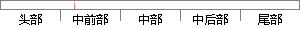

从以上角度说来，本系统具备经济可行性。
片段位置图

相似结果|
相似片段 1： 95以上操作系统。 由以上分析可以看出，该系统开发所要求的技术条件己经满足，也就是说从技术可行性角度分析己具备了系统开发的条件。2)经济可行性分析 经济可行性分析虽然不是可行性研究的关键所在，但是如果
|
※ 片段修改建议 ※
近似词参考：- 具备：具有
系统自动生成语句：从以上角度说来，本系统具有经济可行性。
注：本片段修改建议为系统自动生成，仅供参考。